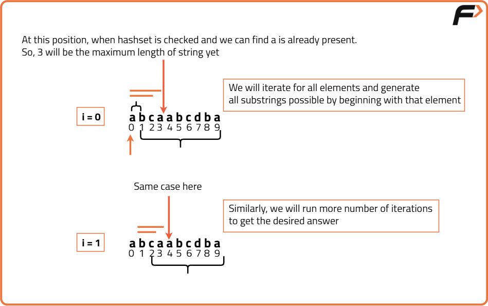
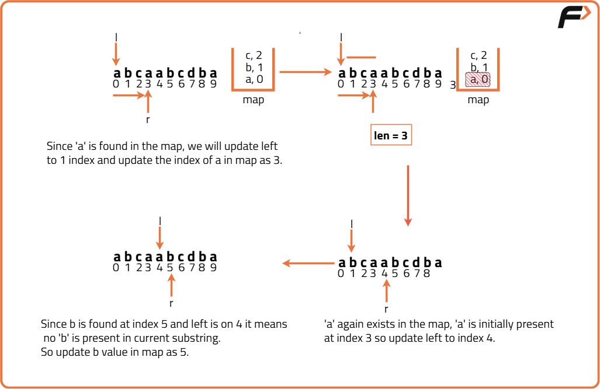

Length of Longest Substring without any Repeating Character
Problem Statement: Given a string, S. Find the length of the longest substring without repeating characters.
Examples
Example 1: Input: S = "abcddabac" Output: 4 Explanation: The longest substring with distinct characters is "abcd", which has a length of 4. Example 2: Input: S = "aaabbbccc" Output: 2 Explanation: The longest substrings with distinct characters are "ab" and "bc", both having a length of 2.
Disclaimer: Here is the practice link to help you assess your knowledge better. It's highly recommend trying to solve it before looking at the solution.
Brute Force
Algorithm
- Iterate through the array using a for loop from 0th index to sizeofArray - 1, to take all possible starting points of the substring into consideration.
- Check if the current character is already in the hash array, if so, break out of the loop. Otherwise, as it is not visited yet, mark the character as 1 in the hash array, signifying that the current character is now visited.
- Now, calculate the length of current substring and update the maximum length of the substrings found so far. Finally, return the maximum length.

Code
#include <bits/stdc++.h>
using namespace std;
class Solution {
public:
int longestNonRepeatingSubstring(string &s) {
// Length of the input string
int n = s.size();
//Variable to store max length
int maxLen = 0;
/* Iterate through all possible
starting points of the substring*/
for (int i = 0; i < n; i++) {
/* Hash to track characters in
the current substring window*/
// Assuming extended ASCII characters
vector<int> hash(256, 0);
for (int j = i; j < n; j++) {
/* If s[j] is already in the
current substring window*/
if (hash[s[j]] == 1) break;
/* Update the hash to mark s[j]
as present in the current window*/
hash[s[j]] = 1;
/* Calculate the length of
the current substring*/
int len = j - i + 1;
/* Update maxLen if the current
substring length is greater*/
maxLen = max(maxLen, len);
}
}
// Return the maximum length
return maxLen;
}
};
int main() {
string input = "cadbzabcd";
//Create an instance of Solution class
Solution sol;
int length = sol.longestNonRepeatingSubstring(input);
//Print the result
cout << "Length of longest substring without repeating characters: " << length << endl;
return 0;
}
Complexity Analysis
Time Complexity: O(n^2), where n is the length of the string. This is because we are using a nested loop to check all possible substrings, leading to a quadratic time complexity.
Space Complexity: O(1), as we are using a fixed-size hash array of size 256 (for extended ASCII characters) and not using any additional data structures that grow with input size.
Optimal Approach
Algorithm
- Initialize few variables as: l and r pointers to 0. These pointers will define the current window [l, r] that contains characters without repetition, maxLen to 0 to store the maximum length of substring found without repeating character.
- Use an array hash of size 256 (assuming ASCII characters) to store the last occurrence index of each character in the string. Initialize all elements of hash to -1, indicating that no characters have been encountered yet.
- Now, while r pointer is less than sizeOfArray - 1, iterate in the array. While iterating, check if current character has occured before using hash array. If so, updadate the left pointer to index of current character plus 1. This ensures that l moves past the last occurrence of of repeated character, effectively removing the repeated character from the window.
- Calculate the length of the current substring as len = r - l + 1. Update maximum length of the substring found so far.
- Update hash array with the current index r, indicating the most recent occurrence of character at pointer r in the string. Finally, return maximum length of the substring.

Code
#include <bits/stdc++.h>
using namespace std;
class Solution {
public:
/* Function to find the longest substring
without repeating characters*/
int longestNonRepeatingSubstring(string& s) {
int n = s.size();
// Assuming all ASCII characters
int HashLen = 256;
/* Hash table to store last
occurrence of each character*/
int hash[HashLen];
/* Initialize hash table with
-1 (indicating no occurrence)*/
for (int i = 0; i < HashLen; ++i) {
hash[i] = -1;
}
int l = 0, r = 0, maxLen = 0;
while (r < n) {
/* If current character s[r]
is already in the substring*/
if (hash[s[r]] != -1) {
/* Move left pointer to the right
of the last occurrence of s[r]*/
l = max(hash[s[r]] + 1, l);
}
// Calculate the current substring length
int len = r - l + 1;
// Update maximum length found so far
maxLen = max(len, maxLen);
/* Store the index of the current
character in the hash table*/
hash[s[r]] = r;
// Move right pointer to next position
r++;
}
// Return the maximum length found
return maxLen;
}
};
int main() {
string s = "cadbzabcd";
// Create an instance of the Solution class
Solution sol;
int result = sol.longestNonRepeatingSubstring(s);
// Output the maximum length
cout << "The maximum length is:\n";
cout << result << endl;
return 0;
}
Complexity Analysis
Time Complexity: O(n), where n is the length of the string. This is because we are using a single pass through the string with two pointers, leading to linear time complexity.
Space Complexity: O(1), as we are using a fixed-size hash array of size 256 (for ASCII characters) and not using any additional data structures that grow with input size.